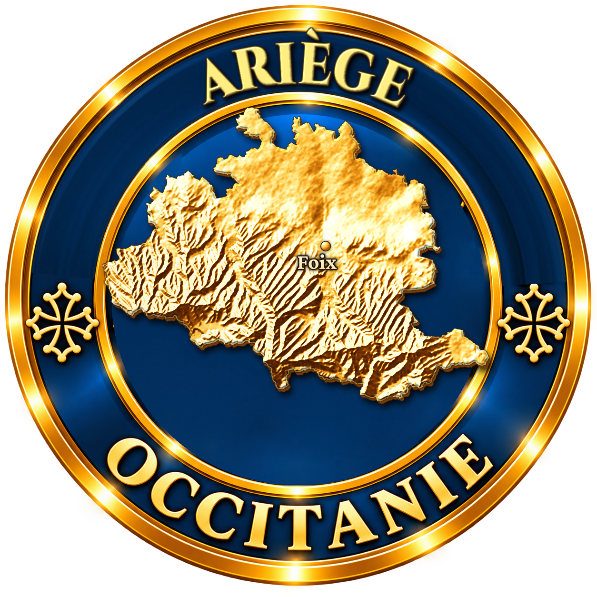
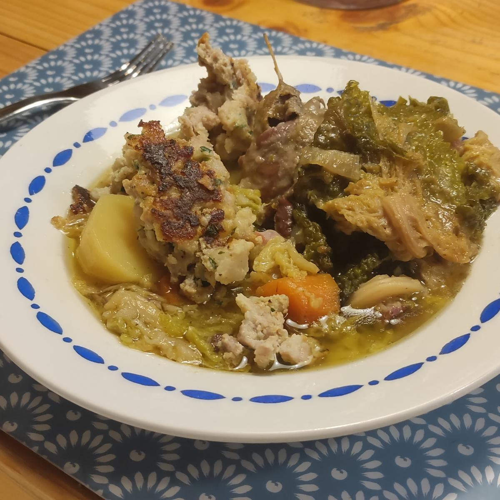

Une grande potée de chou, de carottes, de pommes de terre et de porc, cuite des heures au coin du feu, et sur le bouillon, une galette de farce dorée : la rouzole. L'azinat est le plat paysan de l'Ariège, celui de tous les jours dans sa version pauvre, celui des fêtes dans sa version riche.
Dans les vallées ariégeoises, du pays de Foix au Couserans, l'azinat a longtemps été la nourriture de base des familles paysannes. Chaque village, et presque chaque maison, avait sa façon de le préparer, selon les saisons et ce que donnaient le potager et le saloir. C'est une potée au chou, de la même famille que la garbure gasconne : des légumes, de l'eau, du porc, et des heures de cuisson.
On distingue deux azinats. Le pauvre, de tous les jours, proche de la garbure, avec peu de viande. Et le riche, plat de fête, avec jarrets, saucisses de couenne, confits de canard et rouzole.

Ce qui fait l'azinat de fête, c'est la rouzole, une spécialité du comté de Foix. C'est une grosse galette de farce : chair à saucisse, jambon de pays, œufs, ail, persil et pain trempé dans le lait, hachés ensemble puis dorés à la poêle. On la pose sur le bouillon une demi-heure avant de servir : elle s'imprègne du goût de la potée et on la découpe en parts avec les viandes. Chaque maison avait sa rouzole, avec les ingrédients de la saison.
Avec le bouillon de l'azinat, on fait d'abord une soupe gratinée sur le pain ; viennent ensuite les viandes, les légumes et la rouzole.
Comme beaucoup de potées, l'azinat se sert en deux temps. On verse d'abord le bouillon sur des tranches de pain de campagne, on les parsème de fromage râpé et on les fait gratiner au four : c'est la soupe. Puis on sert les viandes, les légumes et la rouzole, en plat complet. L'Agence de développement touristique de l'Ariège en a fait l'une des recettes phares du département.
Potée de chou et de porc, confits, rouzole : l'azinat appelle un rouge du Sud-Ouest ou des Pyrénées, franc et charpenté.
Ariège rouge
IGP Ariège · Ariège (09)
Les vins du pays ariégeois, notamment des coteaux de Pamiers : des rouges fruités et frais, l'accord de terroir.
Madiran
AOP Madiran · Gers (32), Hautes-Pyrénées (65)
Le tannat, puissant, tient tête aux confits et au porc.
Malepère rouge
AOP Malepère · Aude (11)
Un rouge souple et fruité, au nord-est de l'Ariège.
Fronton rouge
AOP Fronton · Haute-Garonne (31)
La négrette, aux arômes de violette, pour un repas de famille.
L'azinat pauvre, de tous les jours, est proche de la garbure ; l'azinat riche, de fête, contient confits et rouzole.
La rouzole, spécialité du comté de Foix, est une galette de farce dorée, posée sur le bouillon avant de servir.
Le bouillon de l'azinat se sert d'abord sur du pain, gratiné au fromage.
L'azinat appartient à la grande famille des potées au chou du Sud-Ouest, avec la garbure gasconne.